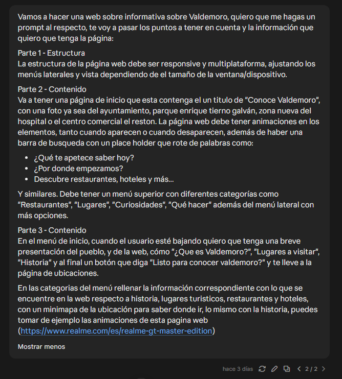

Etapa 1 · Apartado 2.1 del PDF
Todo empezó con una idea.
Primero preparé un prompt propio con la idea general de una web informativa sobre Valdemoro. Después utilicé Claude para desarrollar y concretar ese planteamiento antes de trasladarlo a Gemini.
- Una web responsive y multiplataforma.
- Un inicio con presentación y un buscador.
- Secciones para restaurantes, lugares, curiosidades e historia.

La primera etapa todavía no tenía una web publicada: era la definición del proyecto.
ORIGEN DEL PROYECTO